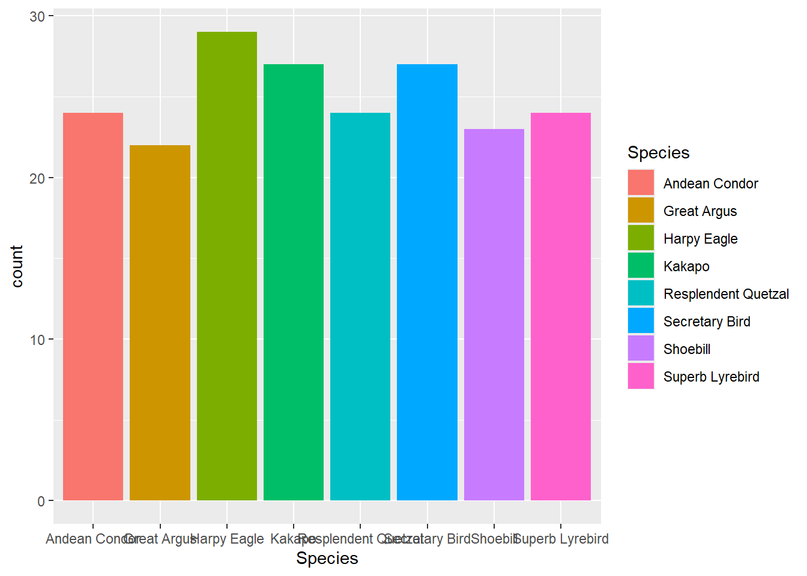
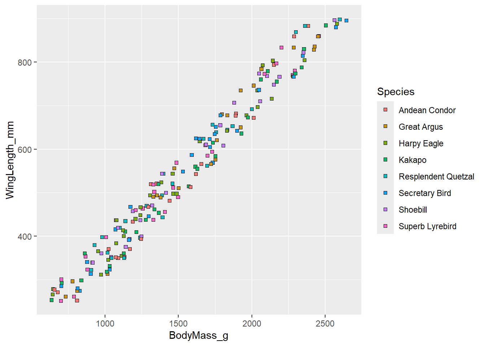
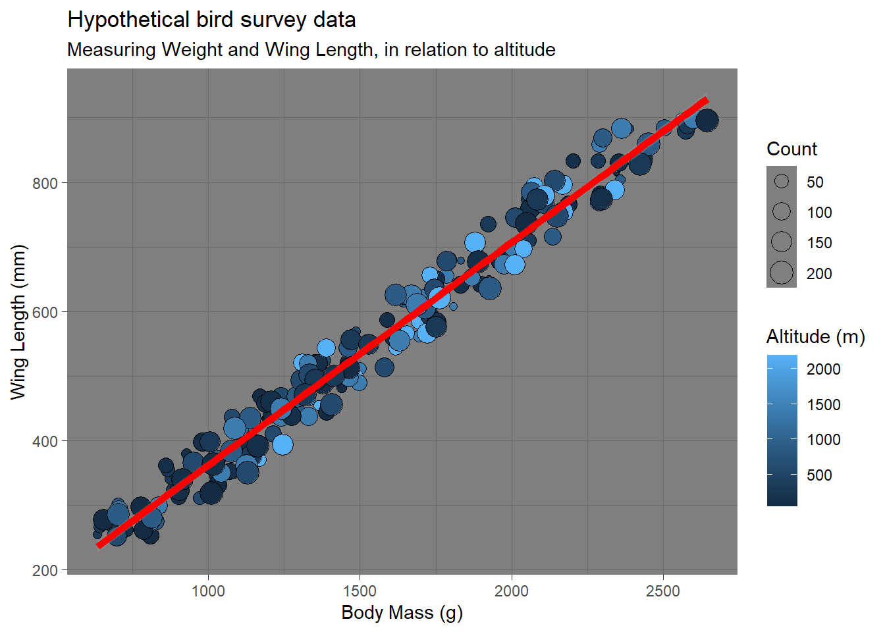
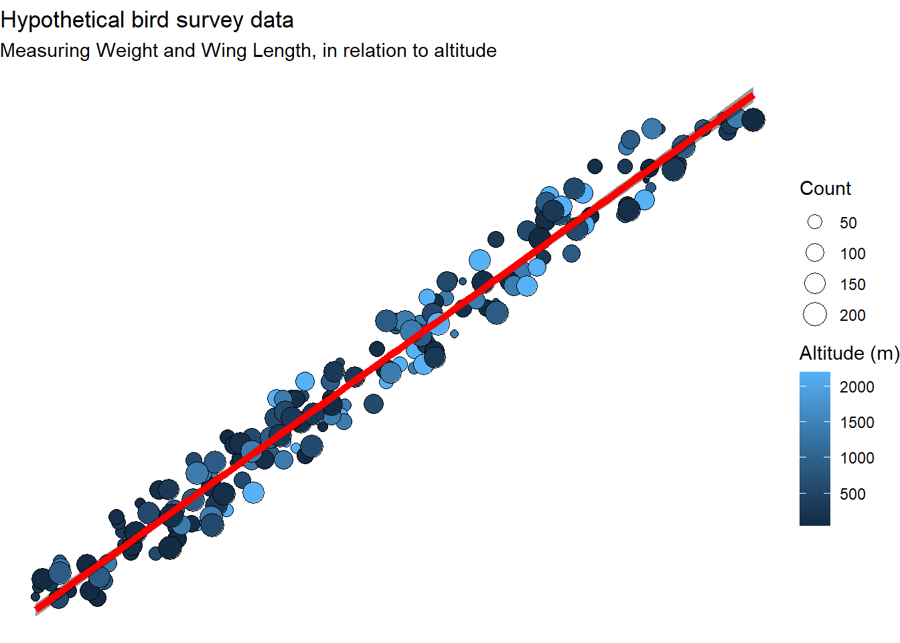
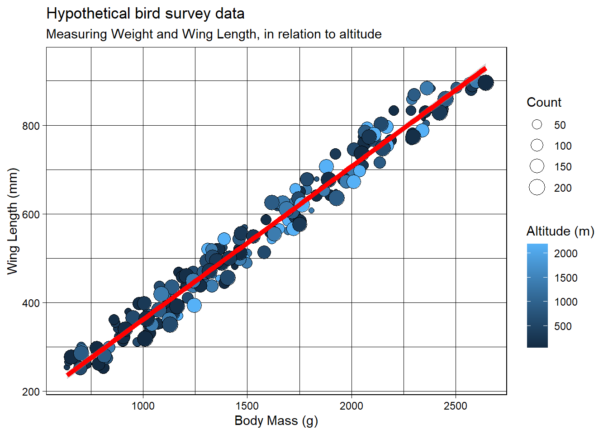

So far this Guide has focused on base R, meaning everything I’ve shown so far can be completed without any external packages. However, as previously mentioned, some packages allow us to broaden our capabilities within R. The ggplot package are prime examples of this, I’ve decided to put them in this guide as i think if you would like to push yourself this would be a great place to start.
HOWEVER! I would suggest consolidating your knowledge of base R before learning this section as ggplot, while still used in R basically is a whole new language, a dialect of Rs coding langauge may be a better way to put it.
What is ggplot?
ggplot2 is one of the most popular and widely used packages used for data visualisation in R and many other softwares, which all follow the foundational concepts from Leland Wilkinsons ‘The Grammar of Graphics’, which in its simplest form, allows us to build graphs in layers. Its incredibly versatile and can be used to visualize activity heat maps, eDNA graphing alongside all the basic graphs in base R, BUT BETTER.
Getting started
We cannot work with the package if we do not have it! You can follow the instructions at the end of Chapter 2 and download and load “ggplot2”. Once you have the package loaded, load up any data you wish to work with (we are going to use more fake bird data)
One of the perks of ggplot is that it will follow the same structure for each visualisation, the only downside is that it slightly varies from that of base R in the use of symbology.
Here is the basic structure:
Note
ggplot(data = mydata,
aes(x = x_variable, y = y_variable)
) +
geom_point()
Part
Purpose
ggplot()
Starts the graph
data =
Dataset being used
aes()
Aesthetic mappings (what goes on x, y, colour etc.)
geom_...()
Type of graph
Important
You will notice there is a ‘)+’, this is like a mini function which tells R that what follows (in this case geom()) is a part of the total function)
Understanding Aesthetics
The aes() section of ggplot is where the package really shines, it allows you to customise SO MUCH, from points changing size, colour and shape based on data and much more. Here is everything you may need:
Aesthetic
Controls
x
Horizontal position
y
Vertical position
colour
Point/line colour
fill
Inside bars or boxes
size
Size of points
shape
Point shape
alpha
Transparency
Here are examples of what they look like using our fake bird dataset!
ggplot(data = birds,aes( x = Species,fill = Species ) )+geom_bar()

It works quite well with bars such as in bar plots and histograms but in scatterplots when you have points, the shape may not always be fillable so you can select a shape that can be filled:
ggplot(data = birds,aes( x = BodyMass_g,y = WingLength_mm,fill = Species ))+geom_point(shape =22,colour ="black" )

Another great example is being to add more data variable to your graphs, so we can have Body mass and Wingspan on our axis but we can incorporate species as colours, or counts of individuals to the size of points on our graph to better visualise our findings:
Of course, a graph is not complete if it does not have Labels on its axes, captions and indicator lines! If you want to change the text of an element, just list it under labs() and then identify what you want it changed to.
You’ll also see in the example below that a correlation line has been added using the geom_smooth() function. When you add this function and designate the method as ‘lm’ it will create a straight line that best fits the data. Furthermore, you can change the method to ‘loess’ to achieve a curved line!
ggplot(data = birds, aes(x = BodyMass_g,y = WingLength_mm))+geom_point(aes(size = Observation, fill = Altitude_m),shape =21,colour ="black" )+geom_smooth(method ="lm",colour ="red",linewidth =2 )+labs(title ="Hypothetical bird survey data",subtitle ="Measuring Weight and Wing Length, in relation to altitude" ,x ="Body Mass (g)" , y ="Wing Length (mm)" ,fill ="Altitude (m)",size ="Count" )
`geom_smooth()` using formula = 'y ~ x'
#Geom smooth will use the aes() classification from the original data so to avoid #any errors move the aes() for Fill and size into geom_point().
Themes
This section is once again more control over visuals, we can select between MANY themes, position text, change its font, colour and size too.
Examples of these:
Theme
Description
theme_gray() (or theme_grey())
Default ggplot theme with a light grey background and white gridlines.
theme_bw()
White background with black axes and gridlines.
theme_linedraw()
White background with strong black lines around panels and axes.
theme_light()
White background with light grey gridlines; softer than theme_bw().
theme_dark()
Dark grey background with light gridlines.
theme_minimal()
Minimal design with no panel border and subtle gridlines.
theme_classic()
Clean white background with only axis lines
theme_void()
Removes almost everything (axes, gridlines, labels). Ideal for maps or custom graphics.
ggplot(data = birds, aes(x = BodyMass_g,y = WingLength_mm))+geom_point(aes(size = Observation, fill = Altitude_m),shape =21,colour ="black" )+geom_smooth(method ="lm",colour ="red",linewidth =2 )+labs(title ="Hypothetical bird survey data",subtitle ="Measuring Weight and Wing Length, in relation to altitude" ,x ="Body Mass (g)" , y ="Wing Length (mm)" ,fill ="Altitude (m)",size ="Count" )+theme_bw()
`geom_smooth()` using formula = 'y ~ x'
ggplot(data = birds, aes(x = BodyMass_g,y = WingLength_mm))+geom_point(aes(size = Observation, fill = Altitude_m),shape =21,colour ="black" )+geom_smooth(method ="lm",colour ="red",linewidth =2 )+labs(title ="Hypothetical bird survey data",subtitle ="Measuring Weight and Wing Length, in relation to altitude" ,x ="Body Mass (g)" , y ="Wing Length (mm)" ,fill ="Altitude (m)",size ="Count" )+theme_dark()
`geom_smooth()` using formula = 'y ~ x'

ggplot(data = birds, aes(x = BodyMass_g,y = WingLength_mm))+geom_point(aes(size = Observation, fill = Altitude_m),shape =21,colour ="black" )+geom_smooth(method ="lm",colour ="red",linewidth =2 )+labs(title ="Hypothetical bird survey data",subtitle ="Measuring Weight and Wing Length, in relation to altitude" ,x ="Body Mass (g)" , y ="Wing Length (mm)" ,fill ="Altitude (m)",size ="Count" )+theme_light()
`geom_smooth()` using formula = 'y ~ x'
ggplot(data = birds, aes(x = BodyMass_g,y = WingLength_mm))+geom_point(aes(size = Observation, fill = Altitude_m),shape =21,colour ="black" )+geom_smooth(method ="lm",colour ="red",linewidth =2 )+labs(title ="Hypothetical bird survey data",subtitle ="Measuring Weight and Wing Length, in relation to altitude" ,x ="Body Mass (g)" , y ="Wing Length (mm)" ,fill ="Altitude (m)",size ="Count" )+theme_void()
`geom_smooth()` using formula = 'y ~ x'

ggplot(data = birds, aes(x = BodyMass_g,y = WingLength_mm))+geom_point(aes(size = Observation, fill = Altitude_m),shape =21,colour ="black" )+geom_smooth(method ="lm",colour ="red",linewidth =2 )+labs(title ="Hypothetical bird survey data",subtitle ="Measuring Weight and Wing Length, in relation to altitude" ,x ="Body Mass (g)" , y ="Wing Length (mm)" ,fill ="Altitude (m)",size ="Count" )+theme_minimal()
`geom_smooth()` using formula = 'y ~ x'
ggplot(data = birds, aes(x = BodyMass_g,y = WingLength_mm))+geom_point(aes(size = Observation, fill = Altitude_m),shape =21,colour ="black" )+geom_smooth(method ="lm",colour ="red",linewidth =2 )+labs(title ="Hypothetical bird survey data",subtitle ="Measuring Weight and Wing Length, in relation to altitude" ,x ="Body Mass (g)" , y ="Wing Length (mm)" ,fill ="Altitude (m)",size ="Count" )+theme_classic()
`geom_smooth()` using formula = 'y ~ x'
ggplot(data = birds, aes(x = BodyMass_g,y = WingLength_mm))+geom_point(aes(size = Observation, fill = Altitude_m),shape =21,colour ="black" )+geom_smooth(method ="lm",colour ="red",linewidth =2 )+labs(title ="Hypothetical bird survey data",subtitle ="Measuring Weight and Wing Length, in relation to altitude" ,x ="Body Mass (g)" , y ="Wing Length (mm)" ,fill ="Altitude (m)",size ="Count" )+theme_linedraw()
`geom_smooth()` using formula = 'y ~ x'

Developing themes
The prior theme_XYZ makes a complete change to the visuals; however, if we want to change individual sections further, we can use the theme() function, which normally goes belowtheme_XYZ.
The main structure is, you name the element you want to change (Title, legend, axis name etc.) then you describe how you want it changed. There is a lot you can do with this section; here are some of the basics:
Element
Controls
Example
plot.title
Main title
element_text(size = 18, face = "bold")
plot.subtitle
Subtitle
element_text(size = 12)
plot.caption
Caption
element_text(size = 10)
axis.title.x
X-axis title
element_text(size = 14)
axis.title.y
Y-axis title
element_text(size = 14)
axis.text.x
X-axis labels
element_text(size = 12)
axis.text.y
Y-axis labels
element_text(size = 12)
legend.position
Legend location
"right", "left", "top", "bottom"
legend.title
Legend title
element_text(face = "bold")
legend.text
Legend labels
element_text(size = 10)
panel.background
Plot panel background
element_rect(fill = "white")
plot.background
Entire plot background
element_rect(fill = "grey95")
panel.border
Border around plot
element_rect(fill = NA)
axis.line
Axis lines
element_line()
Within the description you can see that more functions can be used such as element_text, this is what is being controlled within the element , alongside this you can further add more functions on how you want to change that part of the element. This would include, size, font, colour etc. Here are some examples:
Now that you have the basics of ggplot down, here are some examples of how you can explore datasets with different graphs. Remember that they all follow very similar structures, and look at what you have learnt from base R to understand why certain aspects are applied in varying places! If there is something in here which you do not understand, read the code and look for what you don’t understand, then go to prior chapters to try to understand why it’s been used!